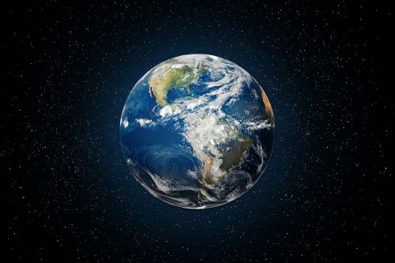
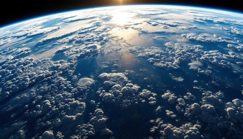

Earth is the fifth largest planet in our solar system. Earth is the only planet in our solar system to have liquid water on its surface. Earth is the only planet name that does not originate from greek or roman mythology in our solar system. The name 'Earth' originates from Old English and Germanic, it means "the ground".

Earth is most likely around 4.5 billion years old. The Earth has had 10 defined geological Eras, Eras are largely determined by major changes in the Earth's fossil record. Earth is mainly made out of iron, oxygen, silicon, and magnesium. About 71 percent of Earths surface is covered in water.

Tallest Mountain Ranges On Earth
- Himalayas
- Karakoram
- Pamir Mountains
- Hindu Kush
- Tian Shan
The distance of the Inner Planets from the sun
| Planet name | Distance From Sun |
|---|---|
| Mercury | Thirty-Six Million Miles |
| Venus | Sixty-Seven Million Miles |
| Earth | Ninety-Three Million Miles | Mars | One-Hundred and Forty-Two Million Miles |